One pool: every image contains a person wearing an outfit, so every image can take either side of a pairing. Product-only shots — flat-lay and ghost mannequin — are excluded, because they can only ever be the garment, which makes the pool asymmetric and a fold impossible to state cleanly. The 13 test-set-1 garments tagged on_model are in; the 17 tagged flat_lay or ghost_mannequin are out. Both tags were checked against the images before being trusted.
Provenance: 30 from test_set1 · 13 from test_set1/garments (on-model) · 8 from test_set2/people · 5 from test_set2/clothes (on-model). 56 images total.
Hard cases tagged in test-set-1: 7 hand_over_torso · 3 fine_pattern · 1 graphic_logo · 1 open_front · 1 graphic_text · 1 texture_sheer. 13 images carry no metadata at all — test_set2 was never tagged.
6 images show no hair in frame (cropped at the neck, or a covered head). Recorded because it is the variable that decides whether BC_klein's bald pass has anything to do: a reference with no hair cannot have hair removed from it. The number behind it is a coarse 256×256 area fraction — it ranks references, it does not classify them.
source
all
test_set1
test_set2 people
test_set2 on-model
test_set1 on-model garments
filter
hard case
no hair in frame
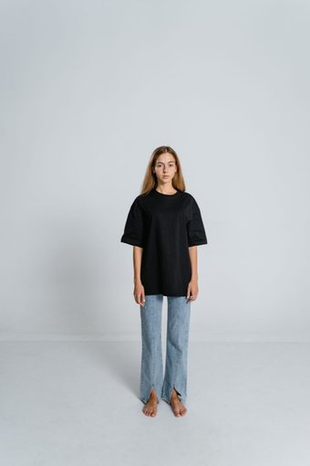
p001 682×1024 · test_set1 neutral_standing slim light woman full_body person p002 682×1024 · test_set1 neutral_standing average medium man full_body person 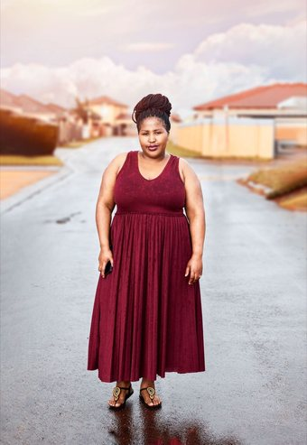
p003 706×1024 · test_set1 neutral_standing plus_size dark woman full_body person p004 1024×682 · test_set1 neutral_standing average light man waist_up person 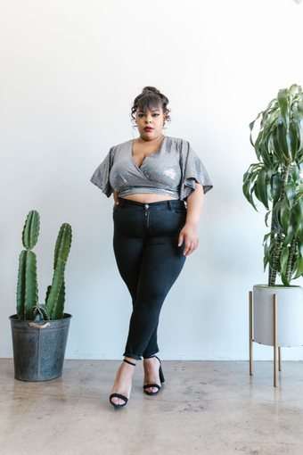
p005 682×1024 · test_set1 neutral_standing plus_size medium woman full_body person p006 682×1024 · test_set1 no hair in frame neutral_standing slim dark man full_body person 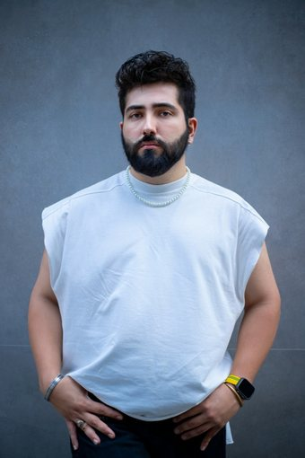
p007 682×1024 · test_set1 neutral_standing plus_size light man waist_up person 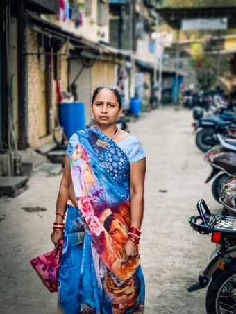
p008 768×1024 · test_set1 neutral_standing slim medium woman full_body person p009 682×1024 · test_set1 hand_over_torso arms_crossed average dark woman full_body person p010 683×1024 · test_set1 hand_over_torso arms_crossed slim light man full_body person 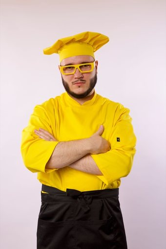
p011 683×1024 · test_set1 hand_over_torso no hair in frame arms_crossed plus_size medium man waist_up person p012 682×1024 · test_set1 hand_over_torso arms_crossed slim dark woman full_body person p013 1024×683 · test_set1 hand_over_torso no hair in frame arms_crossed average light woman waist_up person p014 682×1024 · test_set1 hand_over_torso arms_crossed average medium man waist_up person 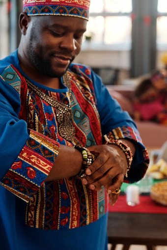
p015 683×1024 · test_set1 hand_over_torso no hair in frame arms_crossed plus_size dark man waist_up person 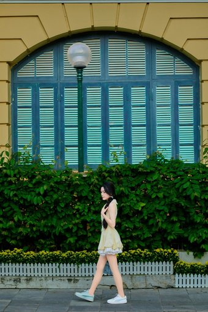
p016 682×1024 · test_set1 side_profile slim light woman full_body person 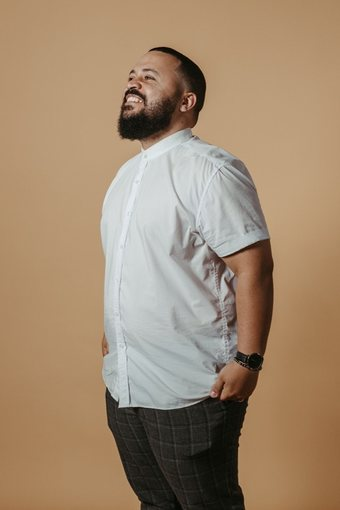
p017 682×1024 · test_set1 three_quarter plus_size medium man full_body person p018 682×1024 · test_set1 side_profile average dark man three_quarter_length person p019 1024×683 · test_set1 side_profile plus_size light woman waist_up person p020 819×1024 · test_set1 side_profile slim medium man waist_up person warm ambient market light 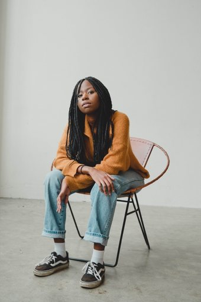
p021 684×1024 · test_set1 sitting slim dark woman full_body person p022 682×1024 · test_set1 sitting average light man full_body person 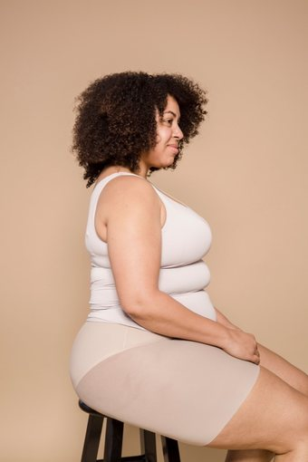
p023 682×1024 · test_set1 sitting plus_size medium woman waist_up person 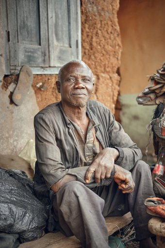
p024 682×1024 · test_set1 sitting average dark man full_body person p025 731×1024 · test_set1 walking slim light woman full_body person 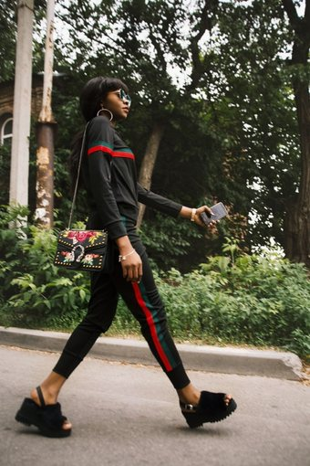
p026 682×1024 · test_set1 walking average medium woman full_body person 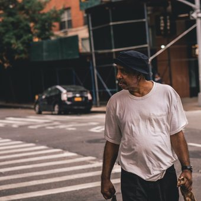
p027 1024×1024 · test_set1 walking plus_size dark man full_body person 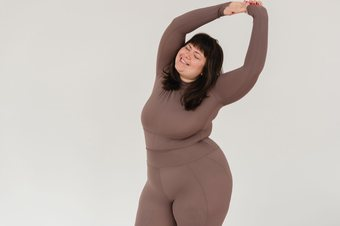
p028 1024×683 · test_set1 arms_raised plus_size light woman waist_up person p029 1024×683 · test_set1 holding_object slim medium man waist_up person 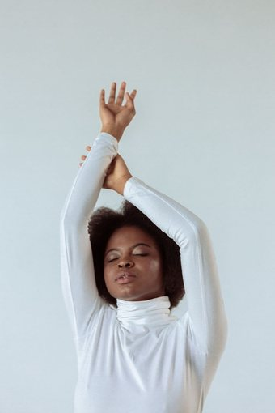
p030 682×1024 · test_set1 arms_raised average dark woman waist_up person dualuse_emma_watson_black_blazer_armscrossed 2500×1726 · test_set2/people no metadata 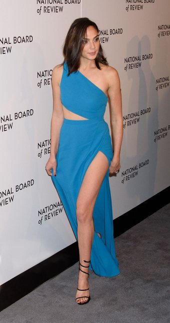
dualuse_gal_gadot_blue_dress_redcarpet 1009×1920 · test_set2/people no metadata dualuse_hugh_jackman_grey_suit_outdoor 1000×1500 · test_set2/people no metadata dualuse_man_black_suit_studio_nonceleb 3070×4605 · test_set2/people no metadata 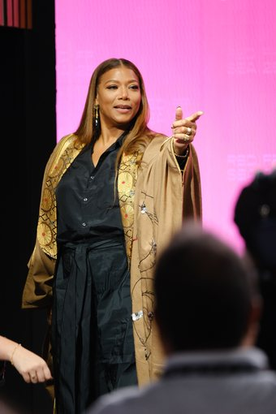
dualuse_queen_latifah_gown_stage 5152×7728 · test_set2/people no metadata 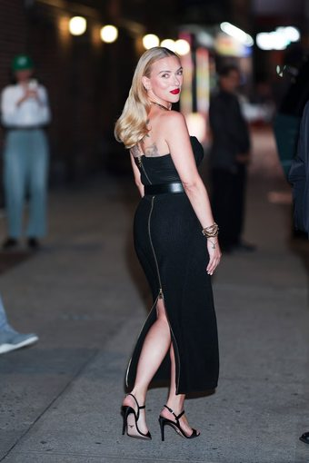
dualuse_scarlett_johansson_black_dress_backview_night 980×1470 · test_set2/people no metadata dualuse_woman_top_denim_skirt_nonceleb 3456×5184 · test_set2/people no metadata 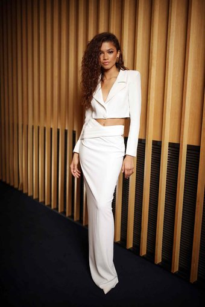
dualuse_zendaya_white_blazer_skirt 1500×2250 · test_set2/people no metadata 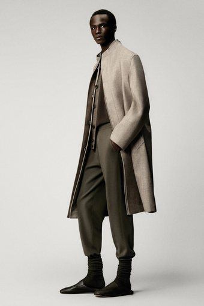
dualuse_lp_beige_long_coat_menswear 2560×3840 · test_set2/clothes (on-model) no metadata 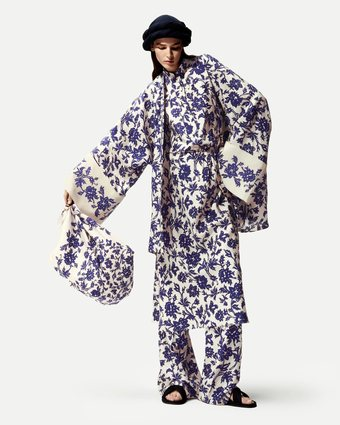
dualuse_lp_floral_kimono_set 2500×3125 · test_set2/clothes (on-model) no metadata 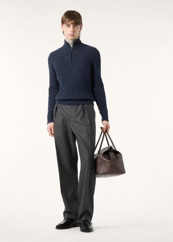
dualuse_lp_navy_quarterzip_knit_LOWRES 690×966 · test_set2/clothes (on-model) no metadata 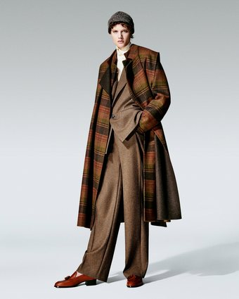
dualuse_lp_plaid_overcoat_brown_suit 1200×1500 · test_set2/clothes (on-model) no hair in frame no metadata 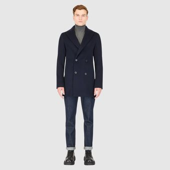
dualuse_navy_peacoat_onmodel 1080×1080 · test_set2/clothes (on-model) no metadata 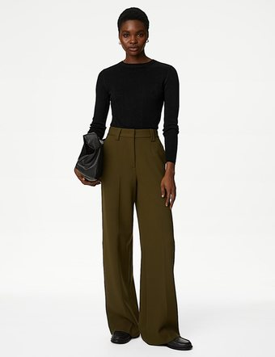
g004 787×1024 · test_set1/garments (on-model) tight_top on_model 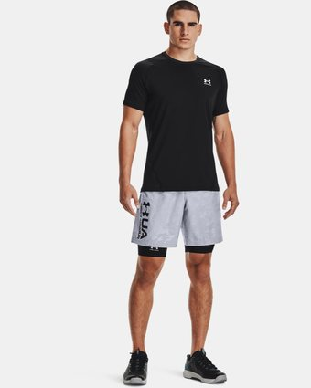
g005 819×1024 · test_set1/garments (on-model) graphic_logo tight_top on_model 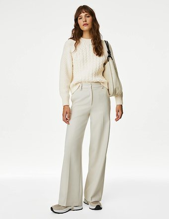
g009 787×1024 · test_set1/garments (on-model) loose_top on_model 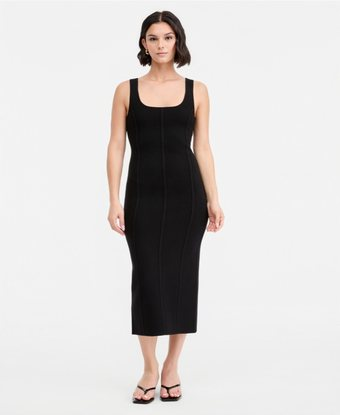
g011 837×1024 · test_set1/garments (on-model) dress on_model 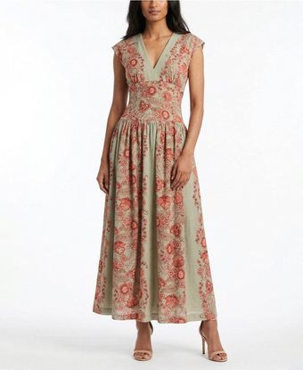
g012 837×1024 · test_set1/garments (on-model) fine_pattern dress on_model 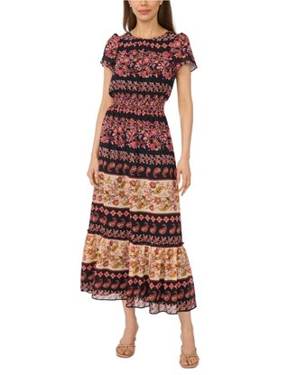
g013 837×1024 · test_set1/garments (on-model) fine_pattern dress on_model 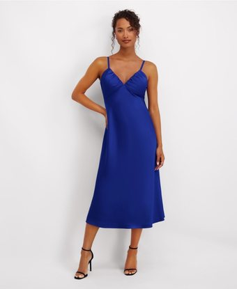
g014 837×1024 · test_set1/garments (on-model) dress on_model 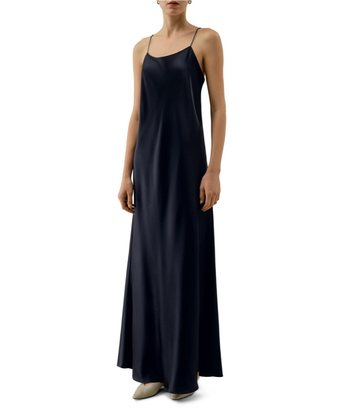
g015 837×1024 · test_set1/garments (on-model) no hair in frame dress on_model 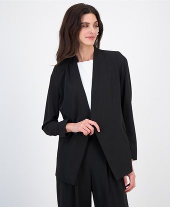
g018 837×1024 · test_set1/garments (on-model) open_front outerwear on_model 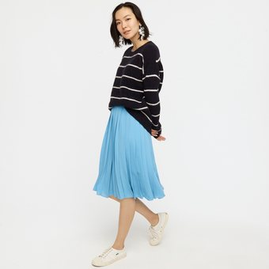
g024 1024×1024 · test_set1/garments (on-model) lower_body on_model 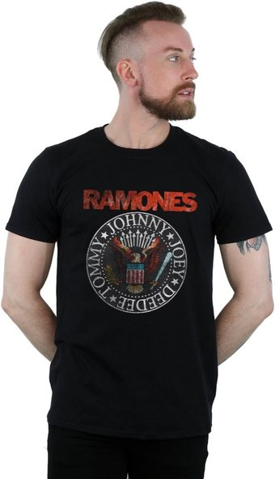
g027 589×1024 · test_set1/garments (on-model) graphic_text hard_case on_model 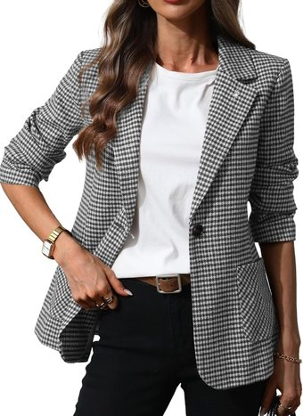
g029 745×1024 · test_set1/garments (on-model) fine_pattern hard_case on_model 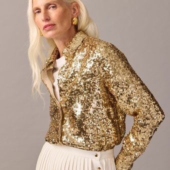
g030 1024×1024 · test_set1/garments (on-model) texture_sheer hard_case on_model Of record: test_set3/manifest.csv, built by v3/build/make_testset3.py from test_set1/ and test_set2/. Copies, not moves — the earlier sets are still cited by runs already on disk.